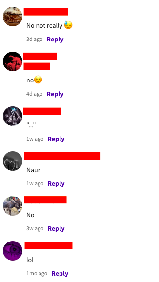

Archive Of Our Own, more commonly referred to as AO3, is an online, not for profit archive dedicated to the preservation of transformative fanworks including fanfiction, fanart, and podfics.[1] The site is run by the Organisation for Transformative Works (OTW) and Archive of Our Own is just one of their many fan related projects. The website first launched in open beta in November 2009[2] and has been running ever since. While still being in beta, it has become one of the most popular sites for hosting and reading fanworks, predominantly fanfiction, with over 5.4 million users and over 10.5 million works posted as of February 2023.[1] A common activity among fanfiction readers and writers is to argue about which website is the best to read from. Some say Archive of Our Own, others say Wattpad, Fanfiction.net, or even Tumblr. However this essay is here to argue that Archive of Our Own is objectively the best site to read from and that those who think Wattpad is better are fundamentally wrong.
Filtering Systems Are Fun (And AO3 Went Above And Beyond)It is a known fact that Archive of Our Own has one of the most well thought out and exhaustive tagging and filtering systems. When posting a work, authors have the option to give their work an: age rating, content warnings, fandom, relationship category (m/m, f/f, f/m, other, gen), relationships, characters, and additional tags. The first three of those being required. This means that from the get-go, readers are able to identify at a minimum, what age range the work is appropriate for, whether the work may have any triggering or upsetting content for the reader, and what fandom the work is for. When you compare this to a site like Fanfiction.net or Wattpad (both used to host fanworks), you can see how those sites fail to compare.
Wattpad, instead of separating tags by any meaningful category, instead chooses to lump all tags into one. This includes fandoms, characters, relationships, the Wattpad equivalent of additional tags, content warnings, everything. This makes it difficult for readers to figure out what exactly they are reading and with no standard or minimum required information, it might not even be possible to find out. There is a mature tag which the author can toggle on but it by no means provides details into what sort of mature content is present. It could be sexual, violent, generally disturbing, anything. Wattpad is the equivalent of fuck around and find out.
As illustrated in the table below, Archive of Our Own gives the reader the most amount of information about a fic, with Fanfiction.net having the second most amount, and Wattpad only having at most six (five if you count Age Rating and Content Warning under the Mature tag as one) but realistically two practical (completion status and chapter count), organised tag categories.
Does this site have a dedicated category for particular tags viewable by readers?| Archive of Our Own | Wattpad | Fanfiction.net | |
|---|---|---|---|
| Age Rating | Yes | * | Yes |
| Content Rating | Yes | * | No |
| Fandom | Yes | No | Yes |
| Relationship Category | Yes | No | No |
| Relationships | Yes | No | Yes |
| Characters | Yes | No | Yes |
| Additional Tags | Yes | ** | No |
| Genre | No | *** | Yes |
| Completed | Yes | Yes | Yes |
| Word Count | Yes | No | Yes |
| Chapter Count | Yes | No | Yes |
* Mature toggle can be used to indicate age rating or content warning but it is not specific
** There is a tags category but since other tags are usually put here as well it can be difficult to read
*** There is a genre selector however you cannot select a genre alongside fanfiction
Archive of Our Own is known for what is essentially its 'anything goes' policy. The site was created with the purpose of users being able to post whatever they wanted without the fear of it being taken down because site owners did not like what they created. The archive was made by and for fans. "People need to stop posting controversial fics on Archive of Our Own, I don't like using it because of them" ignoring the whole purpose of Archive of Our Own being so people can post anything, if Archive of Our Own got rid of what can commonly be agreed on as 'problematic' where do they draw that line? When its explicitly shown? When its just mentioned? Are writers allowed to discuss these topics through their writing at all even if they're condemning it? At the discretion of the admins? Archive of Our Own would turn into every other fanfic site and we would end up at the beginning. Censorship is bad because it means that artificial lines can be drawn by whoever is running the site and I'd rather avoid weird shit than have fics purged just cause site admins decided they didn't like smut anymore (happened with tumblr[6], happened with fanfiction.net[7], There will be riots if it happens to Archive of Our Own).
Modern Day Site Design Is A PlagueInternet users got too used to aesthetics over content. Archive of Our Own gives you all the information you could ever want, Wattpad offers way less yet people enjoy Wattpad more because "it looks nicer." People will claim that AO3 is "too hard to navigate" or that they "don't know how to find fics." People do not randomly click around websites, looking at everything. How are users supposed to know what a website offers otherwise? Giving up after not immediately being able to figure something out is a major concern. Even if users do not want to figure out how to use sites like Archive of Our Own by themselves, by simply searching "how to use ao3" or "ao3 tutorial" will warrant many tutorials that explain everything there is to know. This reluctance to learn means fanfic readers and internet users in general will take the easiest option, this case being Wattpad, instead of embracing the objectively better option. Archive of Our Own gives you a list of fanfiction that exactly matches what you have searched for while Wattpad gives you list of what they consider popular.
You know whats a bad idea? Giving a site for writing the ability to have a cover. People will write their own fics sure, but draw their own covers? No. Despite the saying, people do judge books by their covers. People will buy a book solely because a cover looks good or not. Covers are a significant part of Wattpad culture. Every piece of writing that means anything has a nice looking cover. This is generally fine for original works since people will just get stock images, or photos of actors and edit them together but fanfiction works differently. Why try and draw your own cover when you could find a piece of fanart that you really like and just put that as the cover? It's easy, simple, and no harm done. Except that most of the time, the artists who drew the cover get zero credit. Not one mention in the description of who drew it. You're either getting zero credit or a sentence that just says "Cover Art wasn't made by me". Both are just as bad as each other. It's promoting art theft to be blunt.
Wattpad is objectively difficult to use to find specific works, unless you are getting recommendations from someone. The parts counter means fuck all because people just use them for author notes, q&as, etc. The tags that people commonly use are vague at best so you have no real idea what kind of story you're getting. The cover takes up more space than the actual description when scrolling through options so you have to click on a fic just to read the full summary. Reading time is a cool feature however you cannot adjust your reading speed so if it differs from average it means nothings. You can't see the word count so you have no idea how long chapters actually are. Even if there was a word count feature it would mean nothing since there is no author note section on works so people just put them in the chapter text and that would artificially inflate the word count.
Do You Really Need An App That Badly?The main distinction between Archive of Our Own and Wattpad in terms of their user bases is that Archive of Our Own users treat it as a way to read while Wattpad users use it for that purpose as well but also use it as a social site. The rise of the internet has caused there to be a corresponding app for almost everything and a large majority of those have social features. Archive of Our Own is an archive, not a social site, and i believe that is where Wattpad users get lost. On Wattpad you can comment on each paragraph, privately message other users, comment on their conversation page. On Archive of Our Own you are limited to a comment section at the end of each chapter on a work. There is no private messaging.
According to a friend, thanks max, the reasons people prefer the Wattpad app over an Archive of Our Own site is offline use, being easier to use than going online, and you are able to control text size, colour, and font. There are equivalents on Archive of Our Own to have all of these features so having an app is just redundant and would take away resources from maintaining a singular site. "but Wattpad can do both" Wattpad has paid workers and ads with a premium option for income, Archive of Our Own is run entirely off volunteers and donations, they are not comparable in that context. You can easily download fics from Archive of Our Own to put onto an e-reader so you can read offline as well as annotate and keep track of where you're up to, Wattpad does not allow downloads or even copy-pasting sentences. You can create a website shortcut on your phone so you can click that, like you would an app, instead of having to open your browser and typing in the website. You are able to freely edit the way Archive of Our Own looks via site skins with CSS instead of being limited to the options Wattpad gives you. Yes it can be more tedious but the infinite customisability makes up for it and you can easily switch between different presets. Its only something you need to figure out how to do once and there are plenty of tutorials out there to teach you. This is made simpler by Archive of Our Own having a 'wizard' you can use which is easy to use for those who are unfamiliar with CSS. The problem arises however is that people will see these solutions, claim that they're too difficult or convoluted to use and then go back to saying that the website is bad and how desperately they need an app.
An Archive of Our Own app would be an oxymoron. Archive of Our Own is anti-censorship at its core and app stores are known to limit the applications available to what they deem suitable. Apple in particular has this issue. To get an application onto the Apple app store, Apple has to review, approve, and sign the application. This means that only applications they want are allowed on there. Archive of Our Own would have to go through this process so Apple users could download an Archive of Our Own app and they more than likely would not approve it due to it's adult content. A notable example of this would be Apple removing Tumblr from their app store and how that eventually lead to the removal of all pornographic content on their platform.[link] In response to being asked whether unsigned apps would be allowed on the App Store in future, Steve Jobs replied saying that it would lead to kids downloading porn and that they don't want to go there.[10]
There is a way you could get around using the app store on Android to avoid the app getting removed, Apple, however, is a different story. Android phones allow users to install APKs (Android Packages) You could theoretically get around this problem if you have an android, since android allows you to easily install apks, Archive of Our Own could make an app version and let android users freely download it, avoiding the app store all together, however ios is a much different story since apple does not let you do this. You would have to jailbreak your phone just to install an apk.
I'm going to make the bold claim (because it makes sense in my mind) that Apple iPhone users are less tech literate than those who use Android. I'm willing to bet that the people on twitter who say they want an Archive of Our Own app are iPhone users and do not understand the censorship that goes on in that app store or the fact that they can't install third party apps without jailbreaking their phone or having to use a third party installer. If Archive of Our Own did have the coding volunteers and resources to create and maintain an app, which has been said in an admin post why there is not one[9], Android users would be able to install it as an APK (Android Package) without having to use the app store since Android phones support the installation of these apps without having to jailbreak. They would not have to risk getting the app taken down from the app store or not having it get accepted. Apple iPhone users cannot do this though and knowing iPhone users personally they would bitch about how it isn't fair to hell and back. To quote Steve Jobs, "Folks who want porn can buy and [sic] Android phone".[8]
Fan on Fan Interaction In The Wasteland We Call The InternetThe only fan-on-fan interaction that is really possible on Archive of Our Own is commenting on someones work, cause its an archive not a social site. If you want to have an in-depth conversation with someone about a fandom, go to another site. Wattpad has the feature of commenting on each paragraph of a fic instead of just at the end. This drastically increases possible fan-on-fan interaction. In theory it is a cool concept since readers would be able to make specific points on particular parts in a fic instead of just quoting them at the end but the Wattpad community decided to take it in the exact opposite direction. Instead of having unique comments, Wattpad users as a collective decided to bandwagon the same 5 jokes and only comment those. So now instead of fostering a community of people talking about the writing and the fandom itself, it just fostered annoying people that are a joke to the rest of the internet. There are examples of people complimenting the writing or people pointing out small mistakes in punctuation which can be helpful but those are few and far between. I went through some fanfics under the Hot category and also some from miscellaneous fandoms and most of the comments can be summarised by these screenshots:

Yes, some of the comments can be funny but they get old real quick. The last one referencing 'oikawa' wasn't even on a Haikyu!! fanfic, instead it was a My Hero Academia one with a character saying 'okasan'. They can't even keep comments fandom related y'all are an embarrassment to society.
OTW My Beloved <3OTW does this cool thing called preserving fandom history. It makes sure fanworks have a place to live, and makes sure older fanworks won't be completely wiped off the internet if the site they're located on goes down. One of the ways they do this is through their project 'Open Doors'. To put it simply, Open Doors transfers fanworks from at-risk-of-being-lost sites/archives to the archive of our own in order to preserve them for the future.[3] Archive of Our Own is an archive and OTW makes sure it functions as such.
Another cool project of OTW is their legal advocacy for fanworks. They will help you if your smut fic gets sued <3 From their site they, ""create and post educational materials about developments in fandom-related law'", "assist individual fans when their fanworks are challenged", "answer fan's questions about law relevant to fanworks", "help fans find legal representation", "partner with other advocacy organisations and coalitions in the U.S. and around the world", and "advocate for laws and policies that promote balance and protect fanworks and fandom".[5]
[1] https://archiveofourown.org/
[2] https://www.transformativeworks.org/announcing-open-beta/
[3] https://opendoors.transformativeworks.org/en/ https://opendoors.transformativeworks.org/en/faq/
[4] https://hybridpubscout.com/wp-content/uploads/2022/04/Transcript-Episode-64-Claudia-Rebaza-of-OTW.pdf
[5] https://www.transformativeworks.org/legal/
[6] https://www.theverge.com/2018/12/3/18123752/tumblr-adult-content-porn-ban-date-explicit-changes-why-safe-mode
[7] https://www.fanfiction.net/guidelines/
[8] https://techcrunch.com/2010/04/19/steve-jobs-android-porn/
[10] https://techcrunch.com/2010/04/08/steve-jobs-on-why-the-iphone-doesnt-allow-unsigned-apps-they-dont-want-a-porn-store/